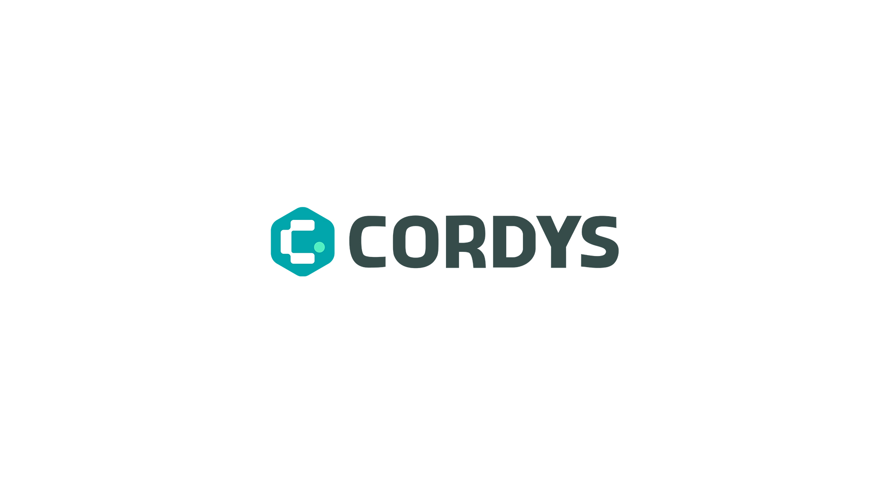

中国 CRM 市场的前世今生，以及 Cordys CRM 如何以「开源+AI」改变游戏规则
深度分析中国 CRM 市场二十年的演进历程、竞争格局与核心矛盾，解读 Cordys 以五个支点破局的战略逻辑。
阅读全文收录 Cordys CRM 版本发布、功能更新、AI 集成实践和产品里程碑，帮助你快速了解开源 AI CRM 的最新进展。
深度分析中国 CRM 市场二十年的演进历程、竞争格局与核心矛盾，解读 Cordys 以五个支点破局的战略逻辑。
阅读全文
从开源基因、AI 原生和私有化部署三个维度，看 Cordys CRM 与主流商用 CRM 的差异。
阅读全文


Cordys CRM Skills 将线索、商机、合同和回款等销售数据封装为 AI 可调用技能，让用户通过自然语言完成查询与管理，提升销售效率。
阅读全文

